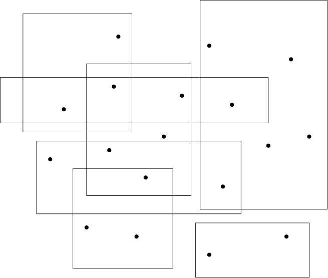

CS614. Advanced Algorithms. Exam 1.
CS614. Advanced Algorithms.
Exam 1
Problem indices on Gradescope for Problem 1 are off-by-one. Add one to the index here to match to Gradescope.
Errata based on feedback from the class (thanks!) — these changes have been made in the questions below:
- Q5: it should have been v \in S and not v \in G.
- Q1.4: assume that the cycles C and D are edge-disjoint.
- Q1.6: the last return statement is
Gand notG-v(the vertex v is moved to F, not removed from the graph).
This problem is worth 20 points overall. All subproblems carry two points each except 1.9 (which is zero marks).
Let G = (V,E) be a simple and undirected graph. Let F \subseteq V be a subset of vertices that we will call a forbidden subset. An instance of CCHS is given by (G,F,k), where k \in \mathbb{Z}^+ is a budget. Such an instance is a YES-instance if there exists a subset of S \subseteq V \setminus F such that:
- |S| \leqslant k, and
- G \setminus S is a forest, i.e, there are no cycles.
Such a subset is called a constrained cycle hitting set with respect to F. In this question, we will develop a c^k algorithm for solving a CCHS instance, combining reduction and branching rules in a spirit somewhat similar to what we have done for Vertex Cover in class.
Our goal will be to return a solution, i.e, a subset of vertices that is a constrained cycle hitting set with respect to F. In particular, an informal overview of our approach, detailed further in the questions below, is the following:
- We will eliminate low-degree (vertices of degree at most one) vertices, and branch on high-degree vertices.
- For the base case, we will find ourselves “stuck” when the graph only has vertices of degree at most two, but this can be handled in polynomial time.
Our algorithm will be denoted solve-CCHS(G,F,k). We begin the following straightforward rules:
- If
k < 0, return NO. - If V(G) = \emptyset, return \emptyset.
Suppose G[F] has a cycle C. Note that all vertices of C belong to F. Then return:
- NO
solve-CCHS(G-v,F-v,k-1)where v is a maximum degree vertex from C.solve-CCHS(G-v,F-v,k-1)where v is a minimum degree vertex from C.
Choose the correct option and justify the correctness of the reduction rule.
If a vertex v has degree zero or one, then return:
solve-CCHS(G-v,F-v,k).solve-CCHS(G-v,F-v,k-1).
Choose the correct option and justify the correctness of the reduction rule.
If a vertex v \in G \setminus F has two neighbors in a single connected component of G[F], then return:
solve-CCHS(G-v,F,k).solve-CCHS(G-v,F,k-1).
Choose the correct option and justify the correctness of the reduction rule.
Let v be a vertex of maximum degree in G \setminus F, and suppose G is an instance where the rules from Problem 1.0, 1.1 and 1.2 do not apply. Suppose further that d(v) = 2.
Let C be a cycle in G. Which of the following scenarios are not feasible?
- C \cap F \neq \emptyset and C \cap (V \setminus F) \neq \emptyset
- C \cap F = \emptyset and C \cap (V \setminus F) \neq \emptyset
- C \cap F \neq \emptyset and C \cap (V \setminus F) = \emptyset
Pick the correct option and justify your answer briefly.
Let v be a vertex of maximum degree in G \setminus F, and suppose G is an instance where the rules from Problem 1.0, 1.1 and 1.2 do not apply. Suppose further that d(v) = 2.
Let C and D be two edge-disjoint cycles in G. Which of the following scenarios are not feasible?
- C \cap D \neq \emptyset
- (C \cap F) \cap (D \cap F) \neq \emptyset
- (C \cap (V\setminus F)) \cap (D \cap (V \setminus F)) \neq \emptyset
Pick the correct option and justify your answer briefly.
Let v be a vertex of maximum degree in G \setminus F, and suppose G is an instance where the rules from Problem 1.0, 1.1 and 1.2 do not apply. Suppose further that d(v) = 2.
Consider the following algorithm to solve this instance:
init X = emptyset
while G\X has a cycle C:
let v be a vertex in C\F:
add v to X
if |X| > k:
return NO
else:
return XWhat can you say about the procedure above?
- It correctly solves the kind of CCHS questions being considered in this problem.
- It will not be correct if there are no vertices in C\setminus F, as required in line 3.
- It will not be correct if there are two overlapping cycles in the instance.
Pick the correct option and justify your answer briefly. If you believe this is not the right algorithm, please suggest an alternative that works. In further questions when we refer to the rule in problem 1.5, we are referring to either the algorithm above or the one in your justification.
Let v be a vertex of maximum degree in G \setminus F, and suppose G is an instance where the rules from Problem 1.0, 1.1, 1.2, and 1.5 do not apply. Let v be a vertex in G \setminus F of maximum degree. Now we branch as follows:
Option A.
X = solve-CCHS(G-v,F,k-1) // pick v
if X is not NO:
return X U {v}
otherwise:
return solve-CCHS(G,F U {v},k) // omit vOption B.
X = solve-CCHS(G-v,F,k-1) // pick v
if X is not NO:
return X U {v}
otherwise:
return solve-CCHS(G,F U {v},k-1) // omit vOption C.
X = solve-CCHS(G-v,F,k-1) // pick v
if X is not NO:
return X
otherwise:
return solve-CCHS(G,F U {v},k) // omit vOption D.
X = solve-CCHS(G-v,F,k-1) // pick v
if X is not NO:
return X U {v}
otherwise:
return solve-CCHS(G,F,k) // omit vPick the right branching strategy and justify your answer.
We summarize the overall algorithm below.
If k < 0, return NO.
If V(G) is empty, return the empty set.
Apply rules 1.0, 1.1, and 1.2.
Pick a vertex v in G\F of maximum degree.
If d(v) = 2, apply rule 1.5.
Otherwise branch according to 1.6.In the next few questions, we will analyze the running time of this algorithm. Assume that the algorithm is called with F = \emptyset, i.e, there are no forbidden vertices to begin with. Fix an execution path P in the branching tree1 of the algorithm that does not return NO. Now:
We use S(P) to denote the output: note that this would consist of the set of vertices that are removed from the instance for inclusion in the solution, i.e, vertices chosen by the first branch in Step 1.6.
We use F(P) to denote the set of vertices that are made forbidden along the path P, i.e, these are vertices chosen by the second branch in Step 1.6.
Note that at the output node, the instance we have is (G,F(P),\ell) for some \ell \leqslant k, where S(P) is a constrained cycle hitting set with respect to F(P) of size at most k - \ell. Also the number of steps in the execution path P is given by |F(P)| + |S(P)|, since every time we branch, we either include a vertex in the solution or make it forbidden.
Let T be a tree and let X be the set of leaves in T, and let Y be the set of vertices of degree three or more in T. Show that:
\sum_{v \in Y} (d(v)-2) = |X| - 2,
using elementary facts about trees.
Fix an execution path P on an instance (G,\emptyset,k) (i.e, a path from root to leaf in the branching tree associated with the algorithm when the input is (G,\emptyset,k)) and consider a vertex v that belongs to F(P), which is to say that the vertex v was included in the set of forbidden vertices at some point during the execution of the algorithm. Denote the instance at this stage of the algorithm by (H,F,k^\prime). In particular, H is the graph obtained after v was included in F. Let d(v) denote the degree of the vertex v in the original instance G, and let d^\star(v) denote its degree in the graph H. Which of the following is true?
- 3 \leqslant d^\star(v) \leqslant d(v)
- 3 \leqslant d^\star(v) < d(v)
- d^\star(v) \geqslant \min(d(v),3)
- d^\star(v) > \min(d(v),3)
Consider an execution path P that does not return NO. Show that F(P) \leqslant 3S(P).
This is an optional question that you can skip. It carries no points.
Can you use the fact from the previous question to come up with an algorithm for CCHS that runs in time O^\star(16^k)? Note that the O^\star(\cdot) notation is used to hide factors that are polynomial in n and k.
Hint: Use the algorithm described previously in the question, but modify it slightly. In particular, if an execution path pushes more than 3S(P) vertices into the forbidden set F, can you terminate it prematurely? Also, what is the cost of the successful execution paths?
Let U=\left\{x_1, \ldots, x_n\right\} be an univere of n elements. Suppose we have a family \mathcal{F} over U that consists of three-sized subsets of U, for example:
\mathcal{F} = \left(x_1, x_3, x_4\right),\left(x_2, x_3, x_7\right),\left(x_1, x_5, x_6\right)
We want to find a smallest subset X of U such that for all sets S \in \mathcal{F}, S \cap X \neq \emptyset.
Consider the following algorithm for this problem.
Greedy(U,F)
Init X = emptyset
while F is non-empty do:
Take an arbitrary set S in F.
Let x be an element in S
X = X U {x}
Remove all sets from F that contain x
end whileWhat can you say about the worst-case approximation ratio of this algorithm?
Consider the knapsack problem. Given a set X=\left\{x_1, \ldots, x_n\right\} of n items with weights w\left(x_i\right) and values v\left(x_i\right), it asks for the highest total value of items we can put into our knapsack such that the total weight of all these items is at most W.
Describe a 0/1-LP that models the problem correctly.

Suppose we have a set P=\left\{p_1, \ldots, p_n\right\} of n points and a set R=\left\{r_1 \ldots, r_m\right\} of m rectangles, as in the image above. Each rectangle r_i \in R has a certain cost c_i>0 associated with it. We wish to find a subset S \subseteq R of rectangles whose cost is minimized such that the rectangles in S together cover all points in P.
We wish to model this problem as a 0/1-LP. To this end we introduce a decision variable x_i for each rectangle r_i \in R, where x_i=1 corresponds to putting rectangle r_i into S and x_i=0 corresponds to not putting r_i into S. otherwise. Furthermore, for a point p_j \in P, define R\left(p_j\right)=\left\{r_i \in R: p_j \in r_i\right\}.
Describe a 0/1-LP that models the problem correctly.
Describe a 5-approximation assuming that each point is contained in at most 5 rectangles.
Suppose G is a simple, undirected graph that has no cycles of length three or four. Recall that a subset S of vertices of G is called a dominating set if every vertex v of G either belongs to S or has a neighbor in S, in other words, N[v] \cap S \neq \emptyset.
Let S be a dominating set of G of size at most k, where G is as given above (i.e, G has no triangles and no cycles of length four). Show that if the degree of v is more than k in G, then v \in S.
Footnotes
Note that the branching tree has a node for all executions of step 1.6, with all non-branching steps executed at the node itself.↩︎